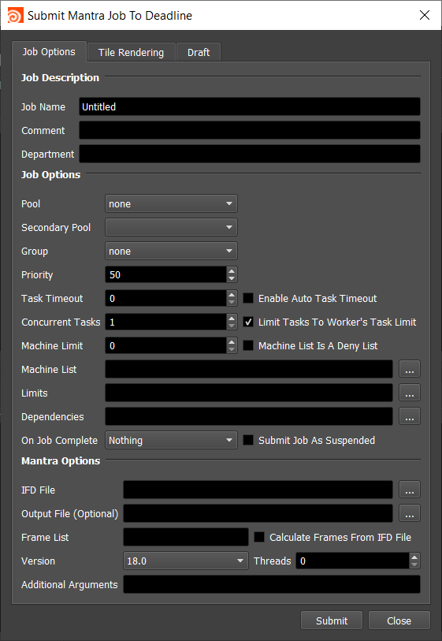
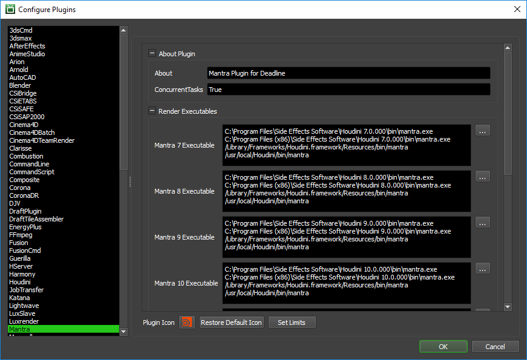

Mantra Standalone¶
Job Submission¶
You can submit Mantra Standalone jobs from the Monitor.
Submission Options¶
The general Deadline options are explained in the Job Submission documentation, and the Draft/Integration options are explained in the Draft and Integration documentation. The Mantra specific options are:
- IFD File: Specify the Mantra IFD file(s) to render.
If you are submitting a sequence of .IFD files, select one of the numbered frames in the sequence, and the frame range will automatically be detected if Calculate Frames From IFD File is enabled. The frames you choose to render should correspond to the numbers in the .IFD files.
Output File: The output file path.
Version: The Mantra version to render with.
Threads: The number of threads to use for rendering.
Additional Arguments: Additional command line arguments to pass to the renderer.
Tile Rendering Options¶
Enable Tile Rendering to split up a single frame into multiple tiles.
Enable Tile Rendering: If enabled, the frame will be split into multiple tiles that are rendered individually and can be assembled after.
Tiles In X: Number of horizontal tiles.
Tiles In Y: Number of vertical tiles.
Single Frame Tile Job Enabled: Enable to submit all tiles in a single job.
Single Job Frame: The frame that will be split up.
Submit Dependent Assembly Job: Submit a job dependent on the tile job that will assemble the tiles.
Cleanup Tiles after Assembly: If selected the tiles will be deleted after assembly.
Error on Missing Tiles: If enabled, then if any of the tiles are missing the assembly job will fail.
Assemble Over: Determine what the Draft Tile Assembler should assemble over be it a blank image, previous output or a specified file.
Error on Missing Background: If enabled, then if the background file is missing the job will fail.
Plugin Configuration¶
You can configure the Mantra plugin settings from the Monitor. While in power user mode, select Tools -> Configure Plugins and select the Mantra plugin from the list on the left.
Note, if the executable supports a MAJOR.MINOR.REVISION (9.0.123) numbering system in its path, then you will need to configure the explicit exe path to the particular revision that you have installed on your machines. Deadline does not track every possible revision available or indeed where it might be custom installed to, so a studio should verify their exe paths are correct for each application version they choose to use with Deadline. Multiple exe paths can still be declared and the first one that is found on a particular Worker on a particular platform will be used from the exe list.
Render Executables
Mantra Executable: The path to the Mantra executable file used for rendering. Enter alternative paths on separate lines. Different executable paths can be configured for each version installed on your render nodes.
Path Mapping (For Mixed Farms)
Enable Path Mapping: If enabled, a temporary IFD file will be created locally on the Worker for rendering because Deadline does the path mapping directly in the IFD file. This feature can be turned off if there are no Path Mapping entries defined in the Repository Options.
FAQ¶
Which versions of Mantra are supported by Deadline?
Mantra for Houdini 7 and later is supported by Deadline.
Error Messages and Meanings¶
This is a collection of known Mantra error messages and their meanings, as well as possible solutions. We want to keep this list as up to date as possible, so if you run into an error message that isn’t listed here, please visit the Thinkbox Help Centre and let us know.
Currently, no error messages have been reported for this plugin.

{kind=link}
{kind=link}